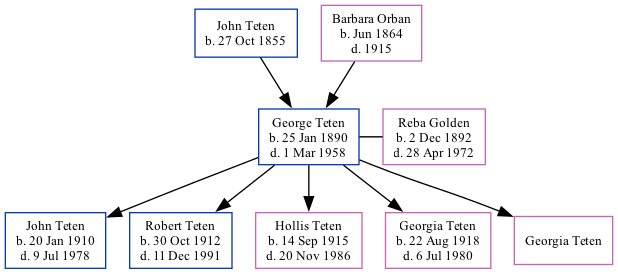

George Carl Teten 1890 - 1958
[ Home ] | [ Surnames Index ] | [ Family History ]The child of John Teten and Barbara Orban, , George was the great-great-uncle of Stephanie Hardesty (née Teten), was born in Nebraska, USA on Jan 25, 18901,2,3,4,5 and married Reba Golden (with whom he had 5 children: John Melvin, Robert Paul, Hollis Golden, Georgia Margaret and Georgia M) in Lincoln, Johnson County, Nebraska USA on Oct 17, 1908 (1910 census information 1/1 child).
During his life, he was living in Nebraska City Ward 4, Otoe, Nebraska in 19001; in Lincoln Ward 3, Lancaster, Nebraska in 19202; in Lincoln, Lancaster, Nebraska in 19303 and in 19354; and in Lincoln, Lancaster, Nebraska on Apr 1, 19404.
He died on Mar 1, 19585 and was buried in Nebraska City, Nebraska, USA after Mar 1, 19585.
Parents
- John J was born on Oct 27, 1855
- Barbara was born in Jun 1864
Children
- John Melvin was born on Jan 20, 1910
- Robert Paul was born on Oct 30, 1912
- Hollis Golden was born on Sep 14, 1915
- Georgia Margaret was born on Aug 22, 1918
- Georgia M
Citations
- 1900 United States Federal Census Ancestry.com Operations Inc (Age: 10; Marital Status: Single; Relation to Head of House: Son)
- 1920 United States Federal Census Ancestry.com Operations Inc (Age: 30; Marital Status: Married; Relation to Head of House: Head)
- 1930 United States Federal Census Ancestry.com Operations Inc (Age: 40; Marital Status: Married; Relation to Head of House: Head)
- 1940 United States Federal Census Ancestry.com Operations, Inc. (Age: 50; Marital Status: Married; Relation to Head of House: Head)
- U.S., Headstone Applications for Military Veterans, 1925-1963 Ancestry.com Operations, Inc.
Family Tree
Data (GEDCOM) maintained by Jay Weston Hannah, Omaha, Nebraska, USA.
Website generated by ged2site. Last updated on Jun 18, 2024.